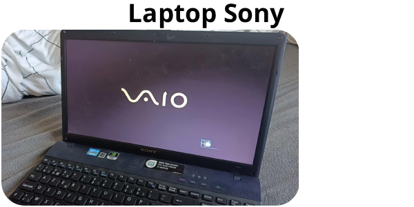
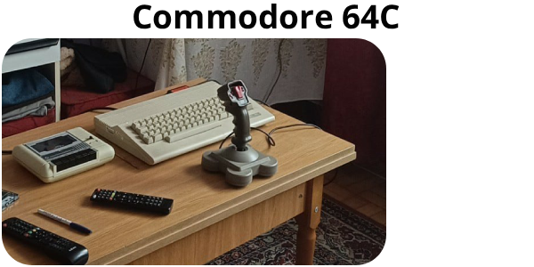
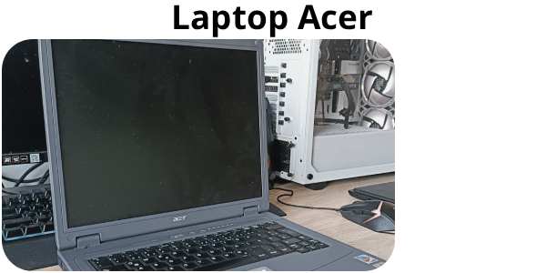
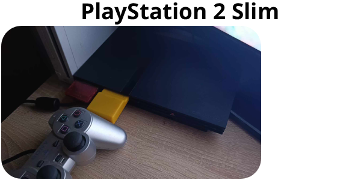
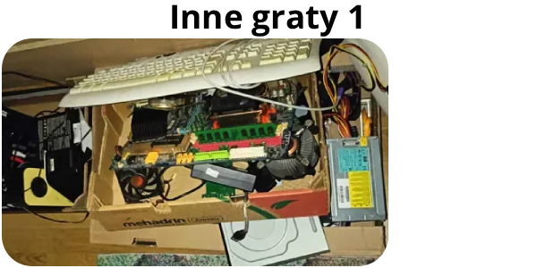
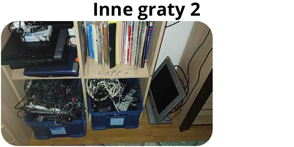

Oto moja strona z gratami
Poniżej widać hyperlinki prowadzące do innych stron:
Moje Projekty Strona Główna Przydatne RzeczyPoniżej widać moje graty

Wady
Powoli się starzeje
Jest uszkodzony od napraw
Zalety
Wspiera Windows 11
Jest ładny
Wady
Jest stary i wolny
Został rozgracony i jest w częściach
Zalety
Wyglądał ładnie i estetycznie
Ma dobrą kartę graficzną
Wady
Nawet nie jest moje
Dodaję bo sporo używałem i jest fajny
Ma 31 lat
Ma 64KB pamięci
Zalety
Wygląda bardzo retro i estetycznie
Zabytek i przedmiot kolekcjonerski
Wady
Ma 22 lata
Był okropny nawet jak wyszedł
Ma okropny BIOS
Zalety
Jest cichy (w miarę)
Ma Pentiuma a nie celerona
Wady
Nie czyta wielu płyt
łatwe do rozwalenia
Zalety
Jest ciche
Gry super chodzą

Wady
Ma rozwalony ekran
Jest bieda wersją i nie posiada dedykowanego gpu
Zalety
Fajnie działa Windows 2000
Ma mocnego Pentiuma 4
Są tam głównie części komputerowe
Są tam głównie kable i laptopy
Poniżej widać hyperlinki prowadzące do innych stron:
Moje Projekty Strona Główna Przydatne Rzeczy